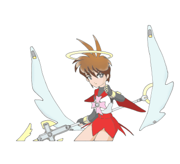
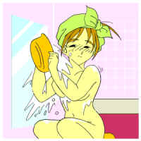

「天使のお仕事 第一話」
きらりっ——と、梅雨明けの空の高みで何かが光った。
だが、考えごとしながら帰り道を歩いている伊織の視界にそれは入らなかった。
進藤伊織（しんどう・いおり）。都立天ヶ丘（あまがおか）高校二年。
何処にでもいる、ごくごく普通の男子高校生である。
「はあ〜っ……」
眉根を寄せて、ため息ひとつ。
別に間近に迫った学期末テストに、ブルー入ってるわけじゃない。
いや、そこそこの成績しかとれない彼にとって、それはそれで一応憂鬱（ゆううつ）な代物なのだが（笑）。
「…………なんでちゃんと声かけられないんだろ、おれ……」
誰言うことなく、ぽつりとつぶやく。
そんなわけだから、さっきの光がピンポン玉くらいの赤い光球となって、自分の頭の上でぷかぷか浮かんでいる——なんて奇っ怪な光景に、伊織は全然気付いていなかった。
そして次の瞬間、光球は彼の首筋から身体の中へするりと入り込んだ。
「……！！」
静電気に触れたかのように、伊織は一瞬ビクッ——と背中を震わせ、
「な…………な、なんだ？ 今のは……」
はっと我に返ると、きょろきょろとあたりを見回した。
……だが、もちろんまわりには何もなかった。
——少年少女文庫１００万Ｈｉｔ記念作品——
原作 １００万Ｈｉｔ記念作品製作委員会
第一話担当 ＭＯＮＤＯ
（title：Dora／illustration：Hikaru Kotobuki & Hamuni）
第一話 「伊織くん、『伊織ちゃん』になる」
次の日——
「……というわけで、なんらかの理由で鹵獲（ろかく）されたＭＳ−０６が、ＲＸ−７７や７８を開発するにあたっての参考となったことは想像に難くないわけなのですが、しかし同じ人型機動兵器であるはずなのに、両者のフォルムにあそこまでの差異が生じるのはいったい何故なのでしょう？
流体パルスとフィールドモーターという駆動系の違いからなのでしょうか？
それとも生産性を重視したモノコック装甲に対して、メンテナンスの効率性を優先したセミ・モノコックフレームを採用したからでしょうか？
わたしはここに、一年戦争の遠因とも言われている公国製のＯＳ（オペレーティングシステム）と、連邦製のそれとのシェア争いが影を落としていると見ているのですが…………」
教壇に立つ日本史の教師が熱く語っている。
ついさきほどまでは、確か『江戸時代の町人文化の変遷』について説明していたはずなのだが……
——それが何処でどう脱線したら、『一年戦争時における公国と連邦の技術格差』の話になるんだおいっ。
しかしそう思いつつ、誰もそれを止めようとはしなかった（笑）。
二年Ｃ組の教室には、そういう突拍子もないこと（？）を「まあいいか」的に容認してしまうようなムードがそこはかとなくあるようだ。
もっとも連休前の六時間目など、生徒も教師も真面目にやろうなんて思ってないのかもしれない。
「…………」
窓側の席に座る伊織もまた、そんな教師の与太話を右から左へ聞き流しながら、ふたつ隣の席に座っている女生徒の横顔をぼんやりと見つめていた。
艶やかな長い黒髪。
垂れ目気味だけどぱっちりとした瞳。愛らしい口元。
天ヶ丘高校の、巫女装束を思わせる蘇芳色（すおういろ）のセーラー服がよく似合う。
一学期のクラス替えからこっち、伊織は彼女——早川真織（はやかわ・まおり）のことが気になって仕方がない。
いや、この際はっきり言おう。彼は真織のことが「好き」なのである。
「だけどなあ……」
そう、優等生で美人の彼女はクラスのアイドル的存在。加えて伊織は女の子に声をかけるのが、いまいち苦手ときている。
自分のこの想いをはっきり伝えたい——と願っているものの、ここ一番の勇気がどうしても出せないのだ。
明るく、誰とでも気さくに話せる彼女が時おり見せる、とまどったような……困ったような表情も、伊織の決意をためらわせる。
「…………」
もちろん、他の誰にもそのことは打ち明けていない。他人の口から噂の形で彼女の耳に入ったり、ましてや『お膳立て』してもらうなんてまっぴらだ。
異性を意識せずに友だち付き合いできる幼なじみの瑞樹や、女の子と見ると誰かれかまわず言い寄っている悪友の藤本あたりに知られると、「身のほど知らず」「高のぞみ」「伊織のくせにっ」「このラブコメ野郎っ」などと言われるだろうし。
だが、たとえそうなったとしても、あきらめる気など毛頭ない。
——くっそおおおっ、夏休みの前にせめて…………せめて早川さんと気兼ねなく話ができる関係にっ！！
純情少年のささやかな、ゆえに切なる願いであった。
その時……
どくんっ——。
……伊織の身体の中で、何かが大きく脈打った。
「うっ！？」
思わず立ち上がろうとした……が、伊織の全身は、何故か金縛りにあったかのようにピクリとも動かなかった。
——な…………なんだあっ！？
椅子から腰を浮かせかけたまま、硬直する伊織。
同時に周囲の景色が色を失い、真っ白になっていく……
どたっ——。「きゃあああああっ！ 進藤くんっ、進藤くん…………っ！！」
自分を呼ぶ女の子の声が遠くに聞こえる。……誰の声だろう？
意識を失った伊織は、ただちに保健室に運ばれた。
校医先生は何故か不在。伊織はソファに寝かされ、付き添ってきたクラスメートたちは担任教師を呼びに保健室をあとにした。
「う……ううっ——」
誰もいなくなったのを見計らったように、伊織の口からかすかにうめき声がもれた。
そして、ぱちっと目を開く。
「……あ？」
しばしぼーっと天井を見つめ、そしてゆっくりと身を起こす。
「な…………なんだったんだ？ いったい……」
生まれてから一度も貧血や立ちくらみなど起こしたことはない。
首を振り、かすれた声でそうつぶやくと、伊織は力の入らない足でふらつきながらも立ち上がった。
どくん——。
再び身体の奥で、何かがうごめいた。
ごうっ……と、部屋中の空気が伊織を中心に渦を巻いた。
仕切りのカーテンがはためき、薬品ロッカーの戸ががたがたと音を立て、机の上のプリントが舞い散った。
「くっ、…………くうう……っ」
突然手足や両肩がぎゅっと絞られていくような感覚をおぼえて、伊織は四肢を突っ張り、背筋をのけぞらせた。
がくっ、とつんのめるように視点が低くなり……
一拍置いて、その胸がむくっ——と膨らんだ。「うっ……うわわわわっ！！」
反射的に胸元を押さえつける。両の手のひらに感じた柔らかな感触と、胸の膨らみ（！）から伝わった「男には感じえない」感覚に、伊織の思考はパニックを起こした。
「ひ……っ！」
背筋をぞくっとしたものが走り抜け、思わず身をすくませる。
無意識の内にふとももの内側がこすり合わされ、そこから伝わってきた得体の知れない違和感に、伊織はぶかぶかになったズボンの上からそこを押さえこんだ。
「……なっ！？」
間髪入れずにゆるくなったウエストを引っぱり、あわてて中を覗く。「な、な、な、……………………ないっ！！」
十七年間そこにあったはずのものが、きれいさっぱりなくなっている。
かわりにあるのは、薄くなったヘアと、その奥の……
「な、な、な……っ！？」
どたっ、と腰を抜かしてしりもちをつく伊織。その視界に備えつけの姿見がとび込んでくる。
映っていたのは、だぶだぶのワイシャツとズボンにくるまって呆然としているショートカットの女の子。
「……………………こ、……これ——」
鏡の少女は自分と同じように、人差し指の先を震わせながらこちらに向けてくる。伊織がその手をぎくしゃくと顔に持っていくと、彼女も目を見開いたまま同じ動作をする。
「…………おれ……？」
お約束——と頭の隅っこの方で思いつつ（？）、鏡に向かって「あっかんべー」してみる。
すると、鏡の中の少女も同時にこちらに向かって舌を出す。
そう……そこに映っている少女は、まぎれもなく伊織自身の姿だった。
「な、ななななななななな…………」
言葉にならない声を上げる。ただ目だけが魅入られたように、姿見に釘付けになる。
細い腕、小さな手、華奢な肩、ふっくらとした腰。
大きく開いた襟元から丸みを帯びた胸の膨らみが覗き見え、伊織のパニックは頂点に達した。
——そ、そそそそうだ夢だゆめだおれはまだ保健室のソファでねているんだだからはやくほっぺたをつねってめをさまさないといけないんだははははやくしないとせーるすれでぃをなのるなぞのしょうじょがやってきてなのましんをいんぷらんとされてれいこんぶんりきにかけられあやしいくすりをのまされてまけんをひきぬいてばいくじこにあっていせかいのようせいさんとからだをとりかえられてしまうんだあああああっ……
意識がぷつっと切れてしまいそうな中、昔友人にすすめられて読んだライトファンタジー小説がごっちゃになった、わけの分からない思考がとめどなくわき出てくる。
と、その時——
「あらあら〜っ、もう『シード』が発動しちゃったんですわねぇ……」
間延びした高い声が、伊織の頭上から降ってきた。
「だっ……誰だっ！！」
はっと我に返ると、伊織は声のした方を振り仰いだ。
そして…………再度仰天した。
「なっ……、なななななっ——」
女の人が天井近くにふわふわと浮いて、こっちをじっと見つめている。
少女っぽさを残した柔和（にゅうわ）な顔つき。鋭さとはおよそ無縁の、ほわんとした表情。
緩やかにウェーブのかかった金髪が腰近くまで垂れ、ギリシャ神話に出てくる女神様を思わせる、不思議な青白い衣装（トーガ）をその身にまとっている。
手には短い錫杖（しゃくじょう）。そして頭の上には光輪。背中には真っ白な羽根。
「どうも初めまして〜。……進藤、伊織さんですね〜」
「て……………………天使い〜っ？」
伊織の目が点になる。あまりに非常識な出来事が連続したため、中枢神経がマヒしてしまったようだ。
「……あっ、自己紹介が遅れましたぁ。わたくし、パラレル・リンクと申します」
「は……？」
「え〜と、進藤伊織さんですよね〜。
まことに申し訳ないのですけどぉ、ちょっとした手違いがありましてぇ、わたくしの放った『シード』があなたの中に宿ってしまったんです……」
「……？？」
ち〜っとも申し訳なさそうに聞こえない、おっとりした口調で意味の分からないことを言うと、パラレルと名乗ったその天使（？）は、すーっと伊織の目の前に降りてきた。
思わずたじろぐ伊織。……しかしあとからよくよく考えると、彼女のその口調には何かしらの精神安定作用が言霊（ことだま）として含まれていたのかもしれない。
「え〜と話せばいろいろと長くなるので〜、できるだけ簡単に説明したいと思いますのですけどぉ、順を追って説明しますとやっぱり長くなるので〜、落ち着いてきいててくださいね〜っ」
「あ……あの——」
「……え〜と、まずはぁ、どうしてわたくしがここにやって来たのかを〜、説明いたしますですわね〜。
こみ入った事情がいろいろたくさんあるのですけどぉ、つまり要約いたしますとぉ、『この町の住んでるヒトたちに、ささやかな幸せを与える』という試練が今回わたくしに課せられたのが〜、そもそもの始まりなのです〜」
「あ、あの……いったい——」
「それでわたくし、ここにやって来たのですけどぉ……実は試練を遂行するためには〜、そこに住む誰かにお手伝いしていただくのが決まりなんです〜」
「だ、だから……そ、その——」
「……そこで〜、今回は伊織さんのお友だちの笹島瑞樹（ささしま・みずき）さんにお手伝いをお願いしていたのですけどぉ、瑞樹さんに
“力” を分け与えるためにわたくしが放った
“力”
の源である『シード』が〜、ど〜いうわけか伊織さんに引き寄せられてしまったんです〜」
「な、なんでそこに——」
瑞樹の名前が出てくるんだっ……と言いかけた伊織だったが、パラレルは意にも介さず説明（？）を続ける。
「『シード』には “力”
を与えると同時に〜、宿ったヒトの願望をかなえるはたらきがあるんです〜っ。
伊織さんが女の子になっちゃったのはぁ、おそらく『シード』が伊織さんの願い事をかなえたために起こった副次的なもののようですわね〜」
「いや、だからその——」
「……ですから伊織さん、え〜っとまことに厚かましいこととは思いますですけどぉ、瑞樹さんの代わりにこのままわたくしのパートナーを勤めていただけないでしょうか〜？
もしわたくしの試練遂行のお手伝いをしていただけるなら〜、必ず元の姿に戻してさしあげますですわ〜」
「元の…………と、そ、そうだっ、この身体っ」
あわててに自分の（変貌した）身体をばたばたと触りまくる伊織。「あああやっぱり女の子だ〜っ。……お、おいパラレルとか言ったなっ。ほんとにこれ元に戻してくれるんだよなっ！？」
「はい、誓って〜」
噛みつかんばかりに顔を近づけてくる伊織に、パラレルは胸に手を当てそう答える。
「わ、分かった。パートナーでもなんでもやってやるから、早く元に戻せっ。……いや戻してくれっ」
「今すぐは無理ですわ〜。いろいろ条件がそろわないとぉ……。あ、でもとりあえずこれからの生活に支障がないようにしておきますのでぇ、今のところはそれで我慢してくださいね〜」
そう言うとパラレルは再び宙に浮かび上がり、手にしていた錫杖を軽く振った。
するとサイズが合わなくなっていた伊織の衣服がふわっと光を帯びて波うち、衣擦れの音をさせてその形を変えていく……。
「ひっ！？ ……ひゃあああああっ！！」
甲高い声で悲鳴を上げる伊織。いまさらだが、声のトーンまですっかり女の子のそれになっていた。
下着が女物のショーツとブラジャーに変化して胸と股間をぴちっと覆い、同時に黒い学生ズボンが膝の上まで短くなると、またたく間に黒みがかった赤色のプリーツスカートに変わった。
 「うわわわ……っ！？」
「うわわわ……っ！？」
いきなり外にさらされたふとももに、伊織は驚きと恥ずかしさがないまぜになった声を上げ、ひらひらしたスカートの裾をあわてて押さえつけた。
「わわわっ、ちっ……ちょっとこれって——」
姿見に映った自分の姿に顔が真っ赤になる。ワイシャツはいつの間にか学校指定のセーラー服に変わっていた。
今の伊織の体つきに、あつらえたようにぴったりだった。
「大丈夫ですわ〜。伊織さんのかなった願い事にはなんの影響もありませんですから〜っ。
それでは、くわしい話はのちほど……」
あわてて振りかえる伊織。しかしパラレルの姿はきらきらきらめく光の粒子を残して、すっ——と消えてしまった。
……………………ちゃん……………………りちゃん……………………いおりちゃん…………伊織ちゃんっ！
誰かが「ちゃん」付けで名前を呼んでいる。
——うっ、も……もうちょっと寝かせてくれ…………なんか変な夢見ちゃったから…………
「……！？」
次の瞬間、伊織はがばっと起き上がった。「ゆ、……夢？」
「よかったあっ。やっと気がついたのね伊織ちゃんっ」
いきなり横から首に抱きつかれ、伊織は目を白黒させた。
「学校の見学に来てていきなり倒れた——って聞かされた時は、どうしようかって思っちゃったけど、……でもなんともなくてほんとによかった」
——えっ、あっ、は……ははは早、川…………さん！？
保健室のソファに寝かされていた伊織に付き添っていたのは、まさに早川真織であった。
「ど…………どうして……？」
驚きのあまり身体中が硬直し、かろうじてそうつぶやく。伊織の頭の中は『？』マークで一杯だ。
だが、ふと違和感をおぼえて視線を落とすと——
「！！」
セーラー服姿の自分が。「う…………うわあああっ！！」
あわてて毛布で身体を覆い隠す。憧れの女の子に自分の女装姿を見られた……と思ったのだからさもありなん。
「ど、どうしたの伊織ちゃんっ！？」
「あ、ああこ……こっこっこっ…………こ、れは——」
だが、『女装』だけでは済んでいなかった（笑）。
むにっ——。
毛布を引き寄せた手が胸元に触れ、自分の胸が柔らかく膨らんでいるのに気付く。
反射的に股間に手をやる。もちろんそこに
“男の大事な” モノは……
なかった。
さあああああっ……と、伊織の顔から血の気が引いた。
——ゆゆゆっ、ゆ、夢、じゃ、なかった…………のかああああああっ！！？？
「ち、ちょっと大丈夫伊織ちゃん？ 顔色悪いよ」
心配そうにそう言うと、真織はがたがた震え出した伊織のおでこに、自分のおでこをくっつけた。
「ん〜っと、熱は…………ないみたいねっ」
「・・・・・・！！」
次の瞬間、伊織の意識はオーバーロードした……。
「……ね、ねえ伊織ちゃん、ほんとに大丈夫なの？」
「あ、う、う……ん」
貧血を起こして元気をなくした（……と、いうことになっているらしい）『伊織ちゃん』を気づかいながら、真織は彼女の手を握りしめ、肩を並べて坂道を歩いていた。
「急に環境が変わって……それで倒れちゃったから、記憶が混乱しちゃったのかしら？」
「…………」
「おじさんとおばさんが、いきなりカナダに行っちゃったんだもの。無理ないわよね」
「…………」
さっきから、真織がほとんどひとりでしゃべり続けている。
何がなんだか分からないものだから、伊織はあいまいに返事しつつ、彼女のなすがままになっている。
「——だから伊織ちゃんは、来週からあたしと同じ高校に通うんだよ。……思い出した？」
「……う、う……ん」
女の子になっちゃうわ謎の天使（？）は現れるわ、伊織のお脳は茫然自失を通り越してほとんど活動停止状態。
わずかにはたらく理性が、真織の話から導き出した
“事実” は——
１．今の自分は『早川伊織』という名前で、真織の従姉妹である。
２．『早川伊織』の自分は、共働きの両親がそろって海外に転勤したため、真織の家に引きとられた。
３．そして今日、転入する天ヶ丘高校に見学に来て、貧血を起こして倒れた（笑）。
「でも大丈夫だよっ。これからはあたしがいつも一緒だし…………ね、伊織ちゃんっ」
真織の屈託のない笑顔に、伊織は一瞬、自分の置かれた異常な状況を忘れて見とれてしまった。
身長が十センチ近く縮んで彼女と同じくらいになったため、顔が真っ正面で向き合ってしまう。
手を握られていることを意識して、ドキドキしてくる。
あわてて目を転じると、坂道の途中に古い石段が見えた。
——こ、ここって…………ま、まさか……っ。
そばにある石塔には、『早川神社』と彫られていた。
早川神社——真織の家である。
「さ、行こっ」
伊織の手を引き、真織は息を弾ませながら石段を一段とばしに駆け上がった。
鳥居をくぐって境内にはいると、白い石畳の先に小さいが重厚な造りの本殿がある。
「おかえり、真織ちゃん、伊織ちゃん」
「ただいまっ、母さん」
白い上衣と朱色の袴という巫女装束に身を包んだ妙齢の女性が、竹箒片手に近づいてきた。
真織の母親、早川真須美——つまり、今の伊織にとっての『叔母さん』である。
見た目はすごく若く見える。もしかしたら真織の姉だと言っても通用するかもしれない。
「ね、どうだった？ 学校は」
彼女にそう尋ねられて、伊織は一瞬言葉に詰まった。「えっ、あ……あの——」
「うん、特にこれといって何もなかったわよ。……ね、伊織ちゃん」
母親に余計な心配をかけまいと、あわてて言葉を引き継ぐ真織。
「ふうん……ま、それはそれとして伊織ちゃん、よく似合ってるわよその制服っ」
あらためて「自分がセーラー服を着ていること」を気付かされ、伊織は耳の先まで真っ赤になった。
夕食は、神社の宮司で真織の父親、守衛（もりちか）氏を加えた四人でテーブルを囲むこととなった。
「…………」
用意されたお箸とお茶碗を前に、伊織は頭の中が真っ白になった。
自分が今、男の『進藤伊織』ではなく、この家の子になっていることをおもい知らされたからである。
「いただきま〜す。……あれっ、伊織ちゃんどうしたの？ 食欲ないの？」
「へっ？ あ……いや、その——」
真織が心配そうな表情を浮かべて、伊織の顔を覗き込んでくる。
「やっぱりまだ身体の調子悪いの？ 今日は早く寝た方がいいかも……」
「う……うん。あ、いや、ほ、ほんとに、大丈夫…………だから」
そういいながら、目の前の肉じゃがに箸をつける伊織。
男が突如女の子に変身するなんて不条理これ極まれりだが、憧れの早川さんと一緒に食事ができるなんて、それはそれでまた夢のようだ。
「ちゃん」付けだけど、下の名前を呼んでもらえるなんて——。
親しげに話しかけてきてくれるなんて——。
照れた顔と内心の動揺を隠すように、伊織は味噌汁の碗をとって、口をつけた。
「ちょっと伊織ちゃん、肘上がってるよ」
「えっ？ ……あ」
「ふふっ。男の子みたい……」
あわてて脇を締める。——そ、そうだった、今のおれは『早川伊織』っていう女の子なんだ……。
今の伊織の格好は、ロゴの入った白いＴシャツにカーゴポケット付きのキュロット（色はブラウン）。“自分の”
部屋にあったクローゼットの中から引っぱり出してきたものだ。
「引っ越してきたばかり」なので衣服の数が少なく、そのためズボンが見当たらず、やむなく近い（？）もので我慢している。
なお、着替える時に自分の下着姿を見てしまい、ショックで卒倒しかけたことをつけ加えておく。
『……ふっふっふっ、こうなってはマジカルイオといえどもただの小娘同然だなっ！』
『まだだっ！ ……まだボクは闘えるっ！！』
『くっ、往生際の悪いやつめっ。……ならば死ねいっ、わたしに楯ついたことを後悔してっ！！』
『負けるもんかあああああっ！！』

テレビでは、バトルコスチュームを身にまとってスピア（長槍）を手にしたショートカットの美少女戦士が、仮面の悪役（幹部クラス、素顔は美形）に向かって見得をきっていた。
「ちょっと母さんっ、食事そっちのけでアニメに夢中になんないでよいい年してっ」
「あらいいじゃない。どーせ洗い物はこれ見終わってからするつもりだし……」
「もう……っ」
ふくれっつらになる真織。娘をあしらい再びアニメ番組に夢中になる母親。
——見かけによらず案外子供っぽいヒトなんだな、早川さんのお母さんって……。
箸を動かしながら、伊織はくすっと笑みを浮かべた。が、
——そ……そうだっ。これ食べ終わったらなんとか理由をつけて、家の様子を見に行かなきゃ！
今の、女の子の姿で元の家に帰ったとしても、どうなるものでもないだろうが。
ならばせめて電話だけでも——と伊織が思ったその時、
「……むっ」
早々に食事をすませてお茶をすすっていた守衛が、何かに気付いたように目を動かした。
そして、湯飲みを置いて伊織の方に向き直ると、
「伊織君、食事が終わったら私と一緒に社務所（しゃむしょ）に来てくれないかね」
「えっ、は……はいっ」
いきなりそう声をかけられ、考え事をしていた伊織は反射的に返事をしてしまった。
母屋に隣接する社務所に連れて来られた伊織は、意外な人物（？）と再会した。
「は〜っ、やっぱり緑茶は〜、京都の宇治のものがまったりとしていて美味しいですわぁ」
ずずずずずっ——。
座布団の上に正座してお茶しているパラレルの姿に、伊織は腰くだけになった。
「な、な、な……っ——」
ふすまにしがみつき、かろうじて踏みとどまる。
「あらあら〜っ、こんばんわ〜っ」
保健室で初めて会った時と同じ、のほほ〜んとした間延び言葉。
頭の光輪はそのままだが、背中の羽根は身体の中に収納できるらしい……。
「なななな……なんで——」
おまえがこんなとこにいるんだっ……と伊織がくってかかろうとしたその時、守衛がやにわに自分の袴の裾を払い、パラレルの前に座って頭を下げた。
「これはこれはパラレル殿、よくぞおいでくださりました。
此度（こたび）は私の姪である伊織を助力（じょりき）にお選びいただきまして、光栄に存じます。
微力ではありますが、私めもこの地を守護する神職として誠心誠意お力添えいたす所存にて、我が姪ともども何卒よろしくお願いいたします」
「丁寧（ていねい）なご挨拶、痛み入ります。
御神職におかれましても、ご多忙とは思いますが、この地に不慣れなわたくしめをよろしくお導きくださいませ」
唖然とする伊織を尻目に、パラレルも居住まいをただし、表情を引き締めて守衛に頭を下げる。
……が、すぐに元のぽや〜っとした顔つきに戻ると、
「と、いうわけでよろしくね〜、イオちゃ〜ん」
「い……イオちゃん？」
「はい。『シード』の力で生まれ変わったあなたはぁ、『早川伊織』であると同時にわたくしのパートナー『イオ・リンク』でもあるのですわ〜」
「……そしてこのボクは、『シリアル・リンク』ってわけ」
のそっと社務所に入ってきた黒猫が、伊織に向かって前脚を上げた。「——よろしくな、伊織」
「ねねねっ、……猫がしゃべったっ！？」
「ただの猫じゃないです〜。シリアルはわたくしとイオちゃんのファミリアですわ〜」
ファミリア——日本語に訳せば、『使い魔』『式神（しきがみ）』『使役妖精』といったところである。
「実は、伊織君を我が家に引き取ったのには、こういったわけがあったのだよ」
そう言うと守衛は、伊織をパラレルの横に座らせた。
シリアルは図々しくも伊織の膝の上にとびのり、そこで身体を丸くした。
ふとももの上でごそごそされ、伊織は一瞬眉根を寄せる。
……このあとこの黒猫は、早川家のペットとしての居場所を獲得することとなるのだが。
さて、守衛の説明によると、この早川神社の敷地には異界への
“回廊” ——すなわち出入り口があって、代々の宮司（ぐうじ）がその守護を任されているのだそうだ。
「そうですわ〜、この世界は天界、地上界、不〇議界でできているのですわ〜」
ウソくさいことを言うパラレルは、とりあえず無視しておく（笑）。
この地の人間が異界へ迷い込んでしまわないように、逆にこの地に迷い込んだ異界の者（まれびと）を送り返したり、場合によっては『処理』したりするのが早川神社の宮司が代々受け継ぐ裏の役目なのである。
「——伊織君がここにいれば、パラレル殿の手助けをするための
“力” を蓄えることもできるし、それにパラレル殿ご自身にとっても、近くに
“回廊” がある方が何かと都合がよろしかろう。
あ、いや、もちろんお父さんお母さんと離ればなれになった伊織君が淋しくないように……というのが一番の理由だけど、ね」
何やら超常的な力の持ち主らしい守衛だか、彼もまた伊織を『自分の親戚の娘』だと信じて疑っていない。
『シード』の力、恐るべし……である。
「重ね重ねのお心遣い、まことにありがとうございます。
それでは御神職、わたくし姪ごさんと内々の話がありますので、しばらく席を外してはいただけないでしょうか」
話が一段落したところで、パラレルが再び口を開いた。
「……分かりました。何かありましたら遠慮なくお呼びください」
一礼してすっ——と立ち上がると、守衛は伊織に向かってうなずき、母屋の方へと引き上げていった。
「さてと〜、イオちゃんはぁ、わたくしにいろいろとききたいことがあるみたいですわね〜」
にこっと笑みを浮かべて小首をかしげるパラレル。
「……ああ」
憮然として腕を組む伊織。「——まずどうして『早川伊織』なんだよっ。なんでおれが早川さんの親戚の……それも女の子にならなきゃいけないんだっ？」
「それは〜、前にも言いましたけどぉ、『シード』がイオちゃんの願いをかなえたために起こったものなのですわ〜」
そう言いながら優雅な仕種でお茶をすするパラレルに、伊織は完全に毒気を抜かれる。
「で、でも、おれは女になりたいなんて、一度も思ったことはないぞ……」
「イオちゃんの願い事は〜、真織さんとなかよく、何でも話し合える仲になりたい——ってことでしたから〜、それを『シード』がかなえた結果がこれなのですわぁ」
しれっと答えるパラレル。
「そ、そんな無茶苦茶な……」
「『シード』はあくまでも
“想いを現実に変える力”
の結晶ですから〜、意志や指向性は持ってないのです〜」
「そ……それじゃあ——」
「はいっ、ここに次元の “回廊”
があってぇ、御神職がそれを守ってらっしゃったのは単なる偶然でぇ、イオちゃんが『早川伊織』としてここに住むことになったのは〜、つまるところイオちゃん自身が原因なのですわぁ」
笑みを浮かべるパラレルに、伊織は何も言い返せない。
——で、でもなんか責任の所在をうまくすり替えられてる気がする……。
「…………じゃあ、『ささやかな幸せを与える』って、具体的に何をすればいいんだ？」
「それは〜、わたくしにも分かりませんですわ〜っ。
でも、イオちゃんのこれからの生活に〜、それは必ずかかわってきますからぁ……」
パラレルは言葉を切り、湯飲みに残ったお茶を飲み干すと、
「——がんばってくださいねっ」
「おい……」
無責任な答えに絶句する伊織。「…………することしたらほんとに元に戻してくれるんだろな……」
「はい〜、この『試練』がうまくいけば〜、ちゃんと元の姿に戻して差し上げますわぁ」
「うまくいかなきゃ一生このままだけどね……」
それまで黙って伊織の膝の上でうずくまっていたシリアルが、ぽつりとそうつぶやいた。
「お、おいっ！ どういう意味だそれっ！？」
すかさずシリアルをつまみ上げ、すごむ伊織。
「……い、いやその、こ、今度のこの『試練』にしくじったら、パラレルはその時点で強制送還されて、“回廊”
を使って異界を行き来する権利を剥奪（はくだつ）されるんだよっ」
じたばたしながら、シリアルが早口でそう答える。
「き、聞いてないぞそんなこと……っ！！」
「あらあら心配いりませんですわぁ。御神職も協力してくださいますし〜。イオちゃんなら絶対大丈夫ですわ〜。
そうそうイオちゃんの元の家の方はぁ、わたくしの方でなんとかいたしますから心配しないでくださいね〜っ」
「…………」
危機感の全く感じられないパラレルの態度に、伊織は頭を抱えた。
パラレルと別れて母屋に戻ってきた伊織は、真須美
“おばさん” に、「疲れているだろうから、先にお風呂入りなさい」とすすめられた。
しかし今の伊織にとって「風呂に入る」という行為は、清水（きよみず）の舞台からバンジージャンプするくらい悲愴な覚悟と決意が必要だった。
——め…………目をつむって入ればいいんだっ！
トイレで用を足した時は、気が遠くなってあやうくシンクの角に頭をぶつけかけた伊織であった。
もちろんその直前には、立ったまま用を足そうとしてこぼしそうになったりもしたのだが。
「ぬ……ぬ、脱ぐぞっ」
風呂場の戸の横にある姿見に背を向け、えいやっ——とばかりにＴシャツをかなぐり捨てる。
苦心惨憺（くしんさんたん）してブラジャーをはずし、何度も唾を飲み込みながらショーツを引き下ろす。
きめの細かくなった自分の肌の弾力に、伊織は知らず知らずのうちに呼吸を早くしていた。
「なっ、…………何興奮してるんだおれは……っ」
あわててぶるぶると頭を振る。
そしてぎくしゃくとした動きで風呂場に入ると、伊織は薄目を開けてお湯を頭からかぶった。

モノトーンに沈む誰もいない教室で、伊織は真織と向き合っていた。
「……は、早川さんっ、もうすぐ、な……夏休みだから思い切って言いますっ！
お……おれ、す…………好きですっ、早川さんのことっ！！」
一気にそう言うと、伊織は反射的に下を向く。真織は目を大きく見開いて、両の手で口元を覆った。
やがて——
「…………うれしい……」
「え……っ？」
おそるおそる顔を上げると、真織の顔がすぐそばにあった。
「……あたしも…………あたしも前からずっと好きだったの…………
だって……………………だってとっても可愛いんだもん伊織ちゃんっ!!」
「ゑ……っ？」
ぷるんっ——と揺れる胸の膨らみ。
ひんやり外気にさらされる両脚。
いつの間にか伊織は女の子…………しかも何故か裸になっていた。「——う、うわわわわわっ！！」
瞬時に顔を真っ赤に染め、両腕で身体の前を隠すようにしてその場にしゃがみこむ。
「ふふっ、……素敵よ伊織ちゃん——」
「ひゃっ！？」
いきなり背中から真織に抱きしめられ、伊織は思わず身をよじらせた。
彼女の吐息が首筋にかかり、全身をぞくぞくしたものがはしる。
「ほ〜ら……こ、こっ。
女の子の身体のことは、女の子が一番よく知っているのよ…………」
耳元でそうつぶやく真織の指先が、伊織の胸を、ふとももをゆっくりとなぞっていく……
「ああっ……あ、だ…………だめぇ……っ」
……………………………………………………………………………………
「は〜い、よいこのみなさんはここまでですわ〜。
・・・・・・続きは大人になってから見てくださいね〜っ」
「…………うわあああああああああっ!!」
前後の脈絡を完全に無視したパラレルのどアップに、伊織は布団をはね上げてとび起きた。
……そのままの姿勢でしばし息を荒らげる。
夢だった……。
——あ……………………あれ？ ………………ここ、どこだ？
気息が落ち着くと、一瞬自分が何処に居るのか分からなくなり、きょろきょろと周囲を見渡す。
カーテンの隙間から朝日がさし込み、スズメたちのさえずりがかすかに聞こえてきた。
「……！！」
はたと気付き、伊織はパジャマの上から胸と股間をまさぐった。「ああ…………や、やっぱり女のままだ……っ」
同時に昨日の放課後から夜にかけての出来事の記憶が、奔流の如く押し寄せてくる。
——そうだ…………ここ、早川さんの家なんだ……。
真織たちが風呂場で倒れた自分をベッドまで運んでくれたことも、伊織はおぼろげながらおぼえていた。
「……お、女の子なんだ。…………この身体——」
そうつぶやきながら自分の胸の膨らみを、今度はそっと触れてみる。
乳房の先が、ぴくっ——と震えた…………ような気がした。
「あ……っ」
あわてて手を離し、ごくっ……と、唾を飲み込む。
——そ、そうだっ、ほ、ほんとのほんとに女の子のまま……なのか、し…………調べ、ないと……っ。
心の中でそう言い訳（笑）し、伊織は再び息を荒らげながらパジャマの中に手を入れ——
「ふにゃあああああっ。……あ、おはよう伊織」「——うわったたっ！！ …………な、なんだ、化け猫かぁ……」
布団の上で丸まっていた真っ黒いかたまりにいきなり声をかけられて、ベッドから転げ落ちかけた。
「おいこらっ、化け猫って言うな……っ」
苦笑じみた表情を浮かべ（？）る黒猫のシリアル。そして寝起きの伊織をじろりと見やると、
「——何、赤面しながら汗かいてるんだよ……」
「う、な…………なんでもないっ」
そそくさとベッドに座り直し、あらぬ方を向く伊織。
「……それにしても伊織、お前、朝からほんと色気ないな〜」
「あ、あたりまえだっ。元々男なんだからなっ、おれは……っ」
腕を組んで憮然とする伊織に、シリアルは肩をすくめ（？）た。
「やれやれ……そんな調子じゃ元に戻してもらう前に、正体バレる方が先みたいだな」
「うっ……」
痛いところをついてくるシリアルに、伊織は大の字に開いていた両脚をあわてて閉じた。
——そ、そうだよな。…………けどこれからいったいどうなるんだろ、おれ……。
一夜明け、驚きやとまどいよりも “不安”
の方が大きくなっている伊織であった。
「あっ——と、そうだ忘れてたっ。パラレルからの預かり物っ」
「なんだこれ？ ……髪留め？」
両の前脚を器用に使ってシリアルが放り投げてよこしてきたものは、手の中に握って納まるほどの大きさの、ぱっと見はなんの変哲もない銀色のヘアクリップであった。
「ただの髪留めじゃないよ。……それをつけると、パラレルとどんなに遠く離れてても会話できるんだ」
「テレパシー、みたいなやつか？」
「どっちかっていうと、携帯電話に近い感覚かな」
「ふ〜ん」
便利と言えば便利かもしれない。……とにかく今のところはパラレルとシリアル、このふたり（ひとりと一匹？）に身を任せるしか他に選択肢はないようだ。
「あと、つけていると女の子の生活に困らない——って言ってたっけ」
「なんだそりゃ……？」
シリアルにそう言い返しながら伊織は髪を手ぐしで整え、そのヘアクリップを左耳の上に付けてみた。
すっ……と身体の中を何かが通り抜けたような気がして、思わず目をしばたたかせる。
「や——やだ、何かしら？ 今の……」
「！！ ……お、おい、伊織——」
人差し指を口元に当てて首をかしげる伊織に、シリアルの目が点になった。
「あら、どうしたのシリアル？ あたしの顔に、何かついてる——」
あれ？ ……なんか変だ？
妙な違和感をおぼえ、伊織は言葉を途切れさせた。
——あ、い……今、おれ、なんて言ったんだ？
「あ、い……今、あたし、なんて言ったのかしら——って、え……？」
自分の口から自然にとび出した女言葉に、伊織の目も点になる。「なななっ…………何よこれっ？」
……と、その時、
『もしもしイオちゃ〜ん、きこえますかぁ〜っ』
「きゃっ！」
頭の中で突然響いたパラレルの声に、伊織は短く悲鳴を上げた。
『あらうれしいっ、早速これつけてくれたんですね〜っ』
「ぱっ、パラレルっ、ど……何処なのっ？」
あわててきょろきょろと部屋中を見回すが、その姿は見当たらない。
『え〜っと声にださなくても〜、心の中で思うだけで通じますですわ〜っ』
「あ、そうか……」
——お、おいパラレルっ、なんだこの言葉づかいはっ！？
『はい、このヘアクリップをつけているとぉ、自然に女の子らしい仕種や口調になるのですわ〜』
「え〜っ！！」
思わず声に出す伊織。
『イオちゃんみたいな可愛い女の子に、『おれ』なんて言葉づかいは似つかわしくありませんですわ〜っ』
——か、可愛い？ …………って、おいこらちょっと待てっ！
『あ、そうそう元の家の方ですけどぉ、とりあえずなんとかなりましたので安心してくださいね〜。
……それじゃあまた何かありましたらぁ、こちらから連絡いたしますので〜、イオちゃんはお休みの間は女の子の生活に慣れるために、ゆっくりしていてくださいね〜っ』
「ち、ちょっとパラレル——」
ぷつっ——。つ〜、つ〜、つ〜っ…………
「……もおっ」
言いたいことだけ言って一方的に回線を遮断したパートナーに、伊織はため息をついて眉根を寄せた。
「あはは、なるほどね。……ま、でも今の伊織の方が女の子らしくてほんとに可愛いと思うよ、ボクは」
「じ…………冗談じゃないわっ。何よっ、こんなの——」
パラレルとのやりとりを傍受していたシリアルが笑い声を上げ、伊織は顔を赤らめながらも頭に手をやって、そのヘアクリップをむしり取ろうとした。
が——
「……伊織ちゃん起きた？ 入ってもいい？」
「あ、は……はぁいっ」
ドアの外から突然真織に声をかけられ、伊織は手を引っ込めて思わずそう返事してしまった。
「おはよう伊織ちゃんっ。……身体の具合はどう？」
「あ……う、うん、もう大丈夫だよ真織ちゃん。……ほらっ」
ドアを開けて心配そうに自分を見つめてくる彼女に向かって、伊織は無意識の内に笑みを浮かべて小さくガッツポーズしてみせた。
「よかった。やっといつもの伊織ちゃんだ。
……朝御飯の用意できてるから、早く降りてきてねっ」
「う——うんっ」
安堵の表情を浮かべ、くるりと身をひるがえして階段を駆け降りていく真織。
その後ろ姿を見つめながら、伊織は我知らず両手で頬を押さえていた。
「あ…………あたし、は、早川さんのこと……『真織ちゃん』って呼んじゃった——」
みるみる顔が火照（ほて）ってくる。
——で、でも、し、しばらくはこのままでも…………いいか、な……。
「……やれやれ」
そっぽを向いていたシリアルが、そうつぶやいて大きく伸びをした。
『……え〜っとひとつ言い忘れていましたけどぉ——』
「ごぶっ！！」
なんの前触れもなくパラレルの間延び声が聞こえてきて、伊織は飲んでいたオレンジジュースを喉に詰まらせた。
「だ……大丈夫伊織ちゃんっ？」
あわてて真織が、背中をさすってくれる。
——い、いきなりなんだっ！？ 朝飯の途中だぞっ！
早川家の朝食は、家が神社であるにもかかわらず、フレンチトーストとハムサラダ、オレンジジュースにコーヒーといったメニューであった。
『……はい、実はですね〜、イオちゃんに渡したヘアクリップのことなんですけど〜、これは脳内神経のネットワークを再構成していく性質のものなのでぇ、あんまり長い時間頭につけていると〜、男だった時の感覚や記憶が最適化されてしまって、最後には自分が男だった——っていう自覚が薄くなってなくなっちゃうんです〜っ』
「え……？」
その意味するところを理解するのに、伊織はきっちり三十秒かかってしまった。
——な…… 「何いいいいいっ!!」
「きゃっ！ ど……どうしたの伊織ちゃん！？」
「えっ？ あ……………………あ、い、いやその、ち……ちょっと嫌なこと思い出しちゃったから——」
いきなり立ち上がって声を上げた従姉妹にびっくりする真織。あわてて頭をかきかき言い繕う伊織。
『……ですから〜、イオちゃんもそこのところに気をつけて——』
ぶちっ——。
間髪入れずにヘアクリップをむしり取る。——や、やばかった〜っ。あやうく『洗脳完了』になるとこだった……っ。
顔面にタテ線を入れながら、伊織は声に出さずにつぶやいた。
「……！！」
同時に女物の下着を身につけている自分を強烈に自覚し、すさまじい羞恥心に襲われる。
——ううっ…………か、感覚も “女の子”
になっていたのかよ……。
顔から湯気を上げ、うつむいてしまう。
「ねえ伊織ちゃん、……やっぱり昨日からなんか変だよ」
「うっ、あ、そ、その、え、え〜っと、だ……大丈夫、…………よ」
しどろもどろにそう返事をして、伊織は身を縮ませながらトーストを口に運んだ。
もちろん味など分かろうはずもない。
「あっ、そうだ伊織ちゃん、今日何か予定ある？」
「えっ、あ…………あのその、え、あ、と……特にない、で、す、けど……」
真須美おばさんに突然尋ねられ、伊織はあわててそう答えを返した。
口調が男に戻ったせいか、どうしても言葉がつっかえてしまう。
「——じゃあさ、今日はおばさんと一緒にお買い物行かない？」
「えっ？ あ……あの——」
本当言うと、元の自分の家の様子を見に行きたいのだが……
「……ねっ」
真須美の「有無を言わせぬ」ウインクに、思わず首を縦に振ってしまう。
「よかった。……ほら、伊織ちゃんってお洋服とかほとんど前の家に置いてきちゃったでしょ。
急なことだったから部屋の中も殺風景だし、いろいろと買いそろえなくっちゃね」
「で、でも……」
「心配しないでっ。伊織ちゃんのパパから食費やら生活費やら、ちゃんともらってるから」
「…………うそ——」
存在しない親からお金が振り込まれている……だが、伊織のつぶやきは誰にも聞きとがめられなかった。
『早川伊織』という人間を世に送り出すために、『シード』はそれだけのことをやってのけたのである。
「ちょっと母さん、いったい何たくらんでるのよっ？」
にこにこ笑みを浮かべる母親の顔を、うさんくさそうに見つめる真織。
「……別に何もたくらんでなんかないわよ、ヒト聞きの悪いっ。
ママは伊織ちゃんが元気になってくれたらいいな、って思っただけよ」
「それと洋服買いに行くのと、いったいどういう関係があるのよ……」
「あら、ショッピングは女の子の元気のみなもとだ——って、よく言うじゃない」
「聞いたことないわよ、そんなの……」
留守番役の守衛が、コーヒーを飲みながら渋い顔をした。
「……ふうっ」
郊外にある大型レディスファッション専門店。化粧室（もちろん婦人用）の中で、伊織は大きくため息をついた。
「…………まいったな……」
ぽりぽりと耳の後ろをかき、げんなりした表情を浮かべる。
店に入るなり、いきなりランジェリーコーナーに連れて行かれ、そこで真須美おばさんに「伊織ちゃん、サイズ合わせるから試着してみて」とブラジャーやら何やらをいろいろと押しつけられて、あわててここに避難（笑）してきたのである。
——うううっ。…………ただでさえむっちゃ（無茶苦茶）恥ずかしいのに……。
今日の伊織の服装は、白い半袖の膝丈ワンピースにブルーのノースリーブベスト、紺色のスニーカー。
細いウエストには茶色の布ベルトが巻かれている。
よく考えてみれば、選んだ服を試着するときにも、それらを脱いで下着姿にならないといけないのだ。
「…………これ使うしか、ないのか……」
そうつぶやきながら、伊織は手に握り込んでいた銀色のヘアクリップに視線を落とす。
今はこれだけが頼みの綱である。二時間三時間つけていたって、すぐに影響がでるものでもないだろう。
「……よしっ」
意を決して、伊織はそれを左耳の上につける。
すっ……と身体の中を何かが通り抜けたような気がして、次の瞬間伊織の感覚は女の子のものにシフトした。
「あ……っ」
思わず背筋を伸ばし、姿勢を正す。
同時にさっきまであった下着への違和感が消え、スカートのひらひらした感じが逆に心地よくなっていく……。
——う〜んっ、わ……分かってるんだけど、やっぱ…………変な感じ……。
そう思いながら、洗面所の鏡に自分の顔を映してみる。
「…………」
こうやって変身した自分の容姿をじっくりと見るのは、初めての伊織であった。
——た、確かにパラレルの言った通り、か……可愛い、よな…………。
髪型はさほど変わってはいないが、髪の量が増えたらしく、ふわっとしている。
半袖から伸びた腕も、襟元から覗く首まわりも、細く、まぶしいばかりの白さを持っていた。
そして顔つきは完全に女の子のそれになっている。目鼻だちのはっきりした、愛らしい小さな顔である。
目元口元あたりはどちらかというと元の自分より、“従姉妹”
の真織によく似ていた。
「…………え、え〜っと——」
しばしその顔に見とれ、伊織は二、三度まばたきをすると、胸に手を当てて表情を作ってみた。
鏡の中の、少女の自分がにこっと微笑み、小首をかしげる。
「あ——あたし、早川伊織っ。……あたしは女の子よっ」
髪留めをつける前の無意識に抑えた声ではない、はっきりした可愛らしい声が、その唇から自然にこぼれた。
「さてとっ、下着はとりあえずこんなくらいで…………じゃあ今度はお洋服、見に行くわよっ」
「は…………はい——」
ますます意気上がる真須美おばさんに引っぱられて、取っかえ引っかえ下着を試着させられた伊織は、どっと疲れを感じて肩を落とした。
——ま…………まだあるのか……。
口調、仕種、感覚が変わったからといっても
“中身” が変わったわけではない。少女の身体と少年の思考（記憶＆経験）とのギャップだけは、いかんともしがたいものがあった。
女物の下着（サイズは上から８１−５７−８０、Ｂカップ）を身につけるという行為が、伊織にとって恥ずかしいことに変わりはない。
「……そ〜だっ、おばさんが伊織ちゃんに似合うお洋服、見立ててあげるっ」
「あ〜やっぱりそれが目当てだったのねっ、母さんっ」
一緒についてきた真織が、横から口を挟んできた。「——だめだめ伊織ちゃんっ。母さんに任せたら、フリルやリボンのい〜っぱいついたやつばかり選んでくるわよっ」
「そんなことないわよっ。今回はちゃんと伊織ちゃんに合ったお洋服見つけてくるって」
今回は……ということは、以前にそういうことがあったということだ。
ちなみに今日の真織は水色のノースリーブブラウスにホワイトジーンズといった、シンプルな装いである。
ふりふりした服は、どうやら苦手らしい。
「——でも伊織ちゃんに似合うのが可愛い系の服だったら、文句ないわよね〜っ」
「またそういう屁理屈こねるっ。……いいわよ、あたしが選んでくるからっ」
「あ……あの、…………真織ちゃん？」
遠慮がちにそう言ってひらひらと手招きする伊織。だが、ムキになった真織はそれに全く気付かなかった。
一分後——。
「ほらほら伊織ちゃん、このスカートどう？ 可愛いでしょっ」
「だめよ母さんっ、伊織ちゃんにはこっちのボーイッシュなのが似合うんだって」
「あらそう？ 伊織ちゃんも女の子なんだから、やっぱり可愛い方がいいわよね〜っ」
「自分の趣味をゴリ押ししないでっ。ね、伊織ちゃん、こっちの方がシンプルだから、なんにでも合わせられるよっ」
「…………」
早川母娘に詰め寄られ、伊織は引きつった笑顔を浮かべた。「あ、あの……え〜っと——」
「……ほら母さんっ、伊織ちゃん困ってるじゃないっ」
「そうかしら？ 真織ちゃんの方が強引なことしてるからじゃなくて？」
「あたしの何処が強引なのよっ。
母さんこそ、あたしがそういうの着ないからって、伊織ちゃんに無理強いするのやめてよね……」
「そ……そんなつもりはないわよっ。
ママはほんとにこれ伊織ちゃんに似合うかな〜って思っただけで、別に無理強いなんかしてるわけじゃ——」
「じゃあ、伊織ちゃんのお洋服選びはあたしに任せてもらうわよっ」
「う〜ん、……それじゃあ代わりに真織がこれ、着てくれる？」
「どうしてそうなるのよっ」
「…………」
憧れの女の子の意外な一面を見て、しばし言葉を失う伊織。
だが、両手を握りしめて大きくうなずくと——
「あ、あの——おばさん、真織ちゃん、……お願いだから、あたしのことでけんかするの…………やめてっ」
一瞬、言葉が途切れた。
「え——えっと別にけんかしてるわけじゃないのよ伊織ちゃんっ」
「そうそう、お洋服買いに来るといつもこんな調子なのよ、……ね、真織」
「そ、そうなの。だからそんなに心配しないで、伊織ちゃん」
「で……でもふたりとも、あたしのために——」
思わず口ごもる伊織。しかし、「そうだっ」と短くつぶやくと、
「ほ……ほらっ、真織ちゃんとおばさんが選んでくれた服…………こうやったら、ね……いい感じでしょっ」
真織の選んだブラウスと、真須美おばさんが持ってきたスカートを手に取り、身体の前で合わせてみせた。
「えへっ、……どう？」
——あああななな何やってるんだ…………おれは……っ。
思いつきだけでとっさに動いたその結果、妙に
“可愛らしいこと” をしてしまってお脳がショートしそうになる伊織。
しかし、そんな彼女（？）の内面の思いは、顔をほんのり染めて恥じらう少女の姿として外にあらわれた。
「伊織ちゃん……」
「伊織ちゃん…………」
くるりとその場で一回転し、あははっ——と照れ笑いを浮かべる（内心、ちょっとやけくそ気味）伊織に、真織たちは何故かほっとしたような気持ちになって、つられるように微笑み返した。
伊織の中にある優しさと思いやりが “力”
となり、知らず知らずのうちにその場の雰囲気をなごませていく。
そして、その時そこにいた誰もがみな、彼女の笑顔にほんのちょっとだけ幸せな気分になった……。
早川伊織。——本名、進藤伊織。
数奇な運命（笑）の元、少女となった彼……彼女の『天使のお仕事』は、ここから始まる。
第一話 おわり ／ 第二話へつづく
第二話☆予告
あ……どうも、シリアルです。次回はいよいよ伊織が女の子として学校に行くんだ。
でも伊織は相変わらず戸惑ってるし、パラレルの大ボケは輪をかけてひどくなっていくし……
「……手始めに、このサッカー部の方々の願いを叶えましょ〜」
「すまん……。同情するぞ芹沢……」
次回、『天使のお仕事』 第二話。
「イオちゃんの、恋のトキメキ？大作戦・前編」（担当：米津さん）
「な、なんで瑞樹がここにいるんだよぉ〜っ！！」
『天使のお仕事 ——The Angelic Calling
』第一話、いかがでしたでしょうか？
少年少女文庫１００万Ｈｉｔ記念作品のスタートを任されて、嬉しさと緊張感の中で一気に書き上げたのがこのお話です。
純情少年が、大好きな女の子の従姉妹に変身して、ひとつ屋根の下で暮らす——というシチュエーション（ことぶきひかるさんのアイデア）を軸に、主人公の驚きととまどいを描いてみました。
書いてて個人的にイチ押しのキャラクターは、もちろん天使（……かどうかは明言していませんが）パラレル。
早川母娘のやりとりも、結構気にいっています。
子供っぽい母親と、しっかり者の娘。……王道ですね。
さて、はたして伊織くん（伊織ちゃん）は、このあとどうなってしまうのでしょうか？
第二話では、一話で名前しか出てこなかった伊織の幼なじみ、笹島瑞樹ちゃんが登場します。
ＭＯＮＤＯ
なお、冒頭にあった『一年戦争時における公国と連邦の技術格差』の話（笑）は、名著『ＧＵＮＤＡＭ ＣＥＮＴＵＲＹ』と、某模型誌に不定期連載されているコラムを元にしています。